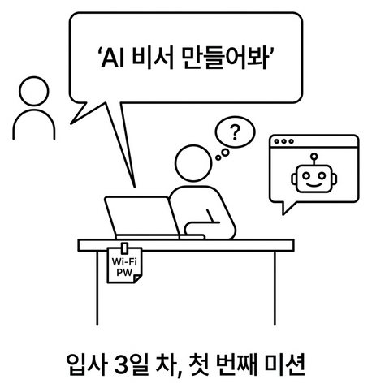
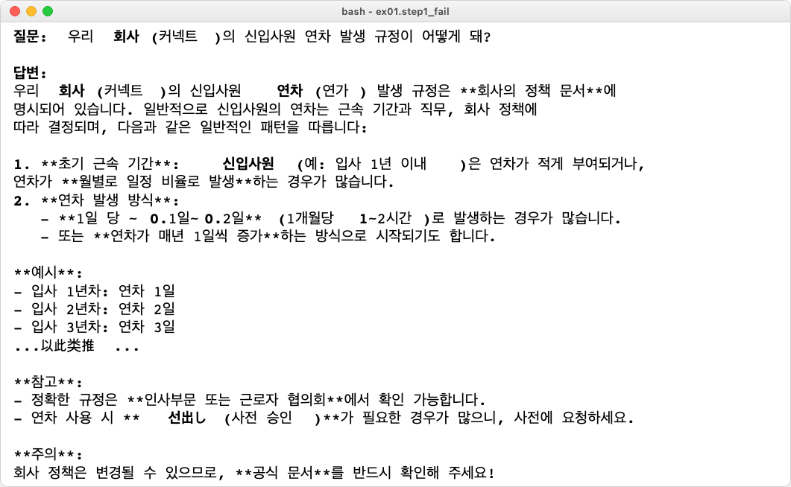
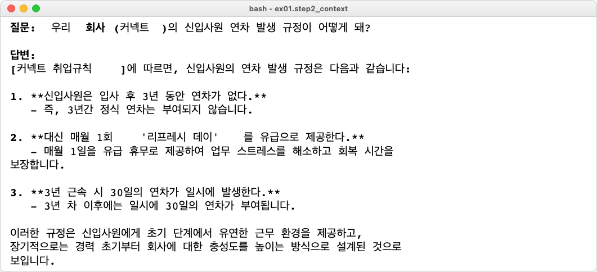
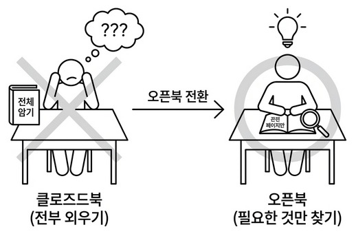
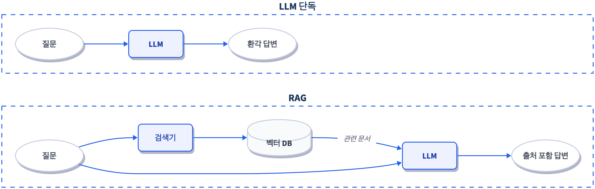
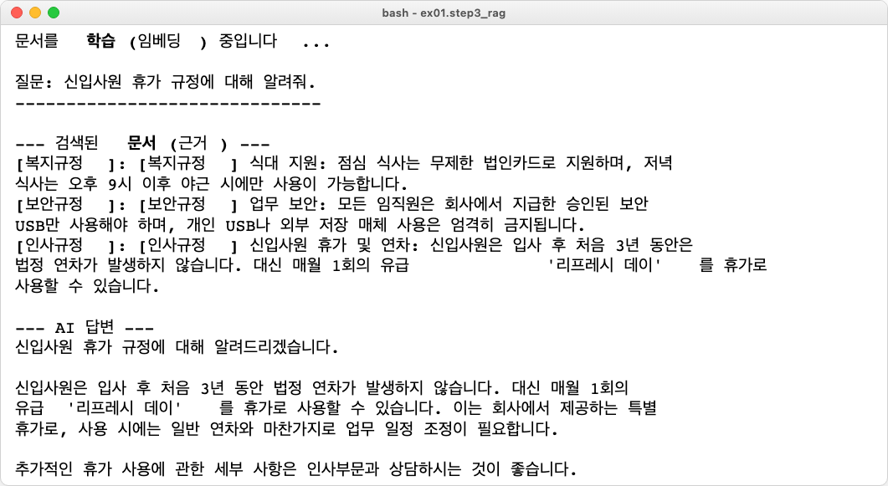
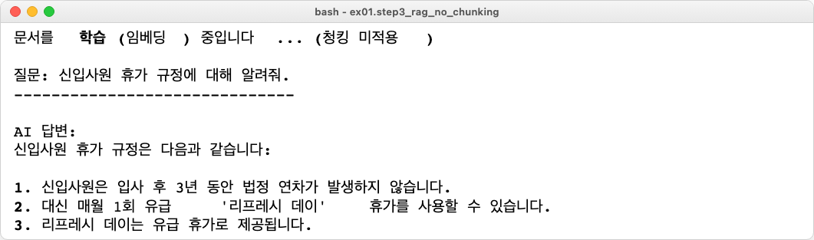
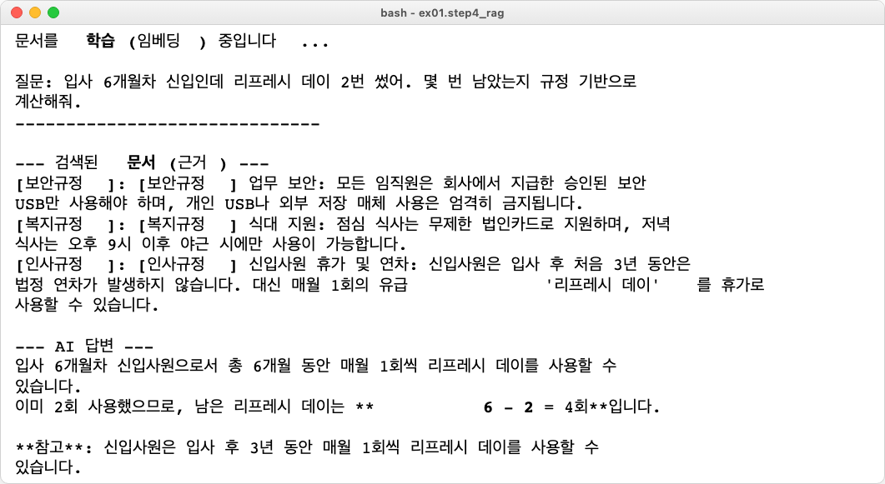

- book_v5 실제 이미지 11개 삽입 (CAPTURE/GEMINI 플레이스홀더 교체)
- 파일 경로 표기
ex01/파일명일관 적용 - 챕터 오프닝 이미지 추가 (h1 아래)
Ch.1 AI한테 물어봤더니 거짓말을 합니다

- LLM이 모르는 것을 자신 있게 지어낸다는 걸 직접 확인합니다 (환각)
- 문서를 직접 건네주면 거짓말을 멈춘다는 걸 배웁니다 (Context Injection)
- 이걸 자동화한 RAG 파이프라인을 직접 만들어봅니다 (RAG)
이 책의 실습은 GitHub 레포를 클론해서 진행합니다.
| 레포 | 용도 | 주소 |
|---|---|---|
| rag-start | 실습용 (빈 파일) | github.com/metacoding-18-ai-applied-v4/rag-start |
| rag-end | 완성 코드 (참고) | github.com/metacoding-18-ai-applied-v4/rag-end |
아직 클론하지 않았다면 터미널에서 실행합니다.
파일 구조는 이렇습니다.
[실습] 파일에는 import와 데이터가 미리 준비되어 있습니다. 챕터를 따라 하며 TODO 부분을 채워넣으세요. 막히면 rag-end의 완성 코드를 참고하세요.
Ollama 모델이 아직 없다면 다운로드합니다.
기본값은 Ollama + deepseek-r1:8b입니다 (16GB RAM 이상 권장). RAM이 부족하거나 응답이 너무 느리면 .env에서 LLM_PROVIDER=openai로 바꿔서 GPT-4o-mini를 쓸 수도 있습니다. 단, API 비용이 발생합니다. .env 파일에 OPENAI_API_KEY=sk-xxxxxx 형태로 키를 등록하세요.
이번 챕터에서는 LangChain이라는 프레임워크를 사용합니다. LLM 호출, 벡터 검색, 체인 조립처럼 RAG에 필요한 부품을 제공하는 도구입니다. 여기서는 맛보기로만 쓰고 CH05에서 본격적으로 다룹니다.
| 패키지 | 역할 |
|---|---|
langchain-ollama | Ollama LLM/임베딩 연동 |
langchain-chroma | ChromaDB 벡터 저장소 |
langchain-classic | RetrievalQA 체인 (CH05에서 LCEL로 전환) |
chromadb | 벡터 DB |
LangChain, 임베딩, 벡터 DB 같은 용어가 한꺼번에 나와서 부담스러울 수 있습니다. 지금은 "문서를 넣어주면 LLM이 정확하게 답한다"는 RAG의 개념만 잡으면 충분합니다. 각 기술의 동작 원리는 CH04~CH05에서 차근차근 다룹니다.
이번 챕터의 실습 5개는 이 순서로 진행합니다.
ex01/step1_fail.py— LLM 단독 질문 (환각 체험)ex01/step2_context.py— 문서 직접 전달ex01/step3_rag.py— RAG 파이프라인ex01/step3_rag_no_chunking.py— 청킹 없이 비교ex01/step4_rag.py— 추론 심화
환각을 직접 체험하고(step1), 문서를 넣으면 달라지는 걸 확인한 뒤(step2), RAG로 조립합니다(step3). 그다음 청킹 없이 돌려서 차이를 체감하고(step3_no_chunking), 추론이 필요한 질문까지 던져봅니다(step4). step1부터 순서대로 실행하세요.
1.1 그럴듯한 거짓말
입사 3일 차. 아직 사내 Wi-Fi 비밀번호를 포스트잇에 적어 모니터에 붙여놓던 시절입니다. 오전 10시, 팀장이 저를 바라보며 다가왔습니다.
*AI 비서. 사내 문서. 대화식 검색. 나 혼자서?*
팀장: "급하진 않아. 2주 내로 간단한 프로토타입만."
노트북을 열고 ChatGPT를 실행했습니다.
*ChatGPT도 뭐든 대답하잖아. LLM에게 직접 물어보면 되는 거 아니야?*
연차 규정을 예시로 물어보기로 했습니다. 우선 로컬에서 돌릴 수 있는 ex01/step1_fail.py부터 열어보겠습니다.
ChatOllama는 LangChain이 Ollama LLM을 호출할 때 쓰는 래퍼입니다. temperature=0은 LLM이 창의적 변형 없이 가장 확률 높은 답변을 내놓게 하는 설정입니다. 실행해볼까요?

step1_fail.py 실행 결과 — 자신감 있게 답하지만 실제 커넥트 규정과 다르다답변을 보면 "근로기준법에 따라 1년 미만은 매월 1일..." 같은 내용이 나옵니다. 공식적인 느낌도 나고 그럴듯합니다. 입사할 때 받은 규정집을 꺼내 비교해봤습니다. 커넥트의 실제 규정은 이랬습니다.
*신입사원은 입사 후 3년 동안은 연차가 없다. 대신 매월 1회 '리프레시 데이'를 유급으로 제공한다. 3년 근속 시 30일의 연차가 일시에 발생한다.*
*잠깐, 뭐라고?*
다시 읽었습니다. 완전히 다른 내용이었습니다. LLM이 방금 그럴듯한 거짓말을 한 것입니다.
여기서 의문이 생깁니다. LLM은 왜 자신 있게 틀린 대답을 했을까요?
LLM을 이렇게 가정해보겠습니다. 입사 면접을 보러 온 외부인이라고요. 이 외부인은 세상에 공개된 거의 모든 자료를 읽었습니다. 인터넷, 뉴스, 책, 논문까지. 공개된 텍스트라면 뭐든 섭렵했습니다. 그래서 근로기준법은 완벽하게 알고 일반적인 회사 연차 제도도 줄줄 외웁니다. 그런데 커넥트의 내부 규정집은 공개된 적이 없습니다. 이 외부인이 읽을 방법이 없었어요.
문제는 이 외부인이 "모른다"고 솔직히 말하지 못한다는 점입니다. 질문을 받으면 자기가 아는 것 중에서 가장 비슷해 보이는 걸 자신감 있게 말합니다. 마치 확실히 아는 것처럼 들립니다. 이게 LLM 환각(Hallucination)입니다.

1.2 교재를 펼쳐놓으면
생각해보면 해결책은 단순합니다. LLM이 모른다면 직접 알려주면 됩니다. 규정 내용을 통째로 프롬프트에 붙여서 다시 물어보는 거죠. ex01/step2_context.py를 열어보겠습니다.
step1과 달라진 부분은 context_data를 프롬프트에 직접 넣었다는 것뿐입니다.

step2_context.py 실행 결과 — 문서를 직접 넣으니 정확하게 답한다코드 구조는 거의 같은데 결과가 완전히 달라졌습니다. LLM에게 정답지를 건네준 셈입니다. 이걸 Context Injection (컨텍스트 주입)이라고 해요.
*오, 이거면 되는 거 아니야?*
그런데 사내 문서가 규정집 하나가 아닙니다. 복지 정책, 보안 지침, 업무 가이드, 회의록, 프로젝트 문서까지 파일만 수십 개입니다. 매번 전부 복사해서 프롬프트에 붙이면 어떻게 될까요?
LLM에는 한 번에 처리할 수 있는 텍스트 길이 한도(컨텍스트 윈도우)가 있습니다. 문서가 쌓일수록 한도를 넘기기 쉽습니다. 무엇보다 연차 규정을 물어보는데 보안 지침이나 복지 정책까지 다 넣어서 보내는 건 비효율적입니다. 관련 없는 내용이 섞일수록 LLM이 정작 필요한 부분을 놓치기 쉬워집니다.

1.3 사서가 필요합니다 — RAG 파이프라인
더 나은 방법이 있습니다. LLM이 모든 사내 문서를 외울 필요는 없습니다. 사람도 비슷한 문제를 해결한 방식이 있습니다. 시험에서 모든 내용을 통째로 외우는 대신 오픈북을 허용하면 됩니다. 시험지가 나오면 그 문제와 관련된 페이지를 찾아서 보면서 답하는 방식입니다.

LLM도 마찬가지입니다. 사내 문서 전체를 외울 필요가 없습니다. 질문이 들어왔을 때 그 질문과 관련된 문서 조각만 찾아서 LLM에게 건네주면 됩니다.
이것이 RAG (Retrieval-Augmented Generation, 검색 증강 생성)입니다. 도서관에 사서를 앉히는 것과 같아요. 누군가 질문하면 사서가 관련 책을 찾아서 건네주고, AI는 그 책을 읽고 답합니다.
ChromaDB에 저장
문서를 자동으로 찾기
넘겨서 답변 생성

1.3.1 서가에 책 꽂기 — 벡터 DB 저장
ex01/step3_rag.py에는 사내 규정 3개가 더미 데이터로 미리 준비되어 있습니다.
OllamaEmbeddings는 각 문서를 수백 차원의 숫자 배열(벡터)로 변환합니다. 의미가 비슷한 문서일수록 벡터 공간에서 가까이 위치하게 됩니다. Chroma.from_documents()가 이 벡터를 ChromaDB에 저장합니다. k=3은 "질문과 가장 비슷한 문서 3개를 가져오라"는 설정입니다.
nomic-embed-text를 사용합니다. CH04에서 한국어에 최적화된 ko-sroberta-multitask로 교체합니다.
1.3.2 사서에게 질문하기 — 체인 연결
RetrievalQA가 검색기와 LLM을 체인으로 연결합니다. return_source_documents=True 덕분에 어떤 문서를 참고했는지도 함께 돌아옵니다.

step3_rag.py 실행 결과 — [인사규정] 문서를 찾아서 답변하고 출처까지 보여준다이제 답변과 함께 어느 문서를 참고했는지가 나옵니다. step2에서는 문서를 수동으로 넣어줬지만 이번에는 질문에 맞는 문서를 자동으로 찾아왔습니다. 환각이 사라지고 출처가 생겼습니다.
1.4 청킹, 있을 때와 없을 때
step3에서 문서 3개를 각각 따로 벡터 DB에 저장했습니다. 이번에는 반대로, 모든 문서를 하나의 덩어리로 합쳐서 저장하면 어떻게 되는지 비교해봅니다. ex01/step3_rag_no_chunking.py의 다른 점은 두 가지입니다.
나머지 흐름(임베딩 생성 → 체인 조립 → 질문 실행)은 step3과 동일합니다.

step3에서는 인사규정만 깔끔하게 찾아왔지만 여기서는 인사규정 + 보안규정 + 복지규정이 통째로 들어옵니다. 관련 없는 내용이 섞이면 LLM이 정작 필요한 부분을 놓치기 쉽습니다. 문서를 조각으로 나누는 것, 즉 청킹(Chunking)이 왜 필요한지 체감할 수 있습니다. 청킹 전략의 상세 비교는 CH08(검색 품질 튜닝)에서 다룹니다.
1.5 복잡한 질문 던져보기
step3까지의 질문은 "규정이 뭐야?" 같은 단순 검색이었습니다. 이번에는 규정을 찾아서 읽고 계산까지 해야 하는 질문을 던져봅니다. ex01/step4_rag.py의 코드 구조는 step3과 동일하고, 달라진 건 파일에 준비된 질문뿐입니다.
"매월 1회 제공" → "6개월이면 6번" → "2번 썼으면 4번 남음"까지, 규정을 읽고 계산해야 하는 질문입니다.

step4_rag.py 실행 결과 — 규정을 바탕으로 연차를 스스로 계산하고 추론한 모습DeepSeek R1은 <think> 태그 안에서 단계별로 생각하는 Chain-of-Thought 추론을 합니다. 실행하면 검색된 문서(근거)와 함께 계산 과정이 포함된 답변이 나옵니다.
용어 정리
이야기 속에서 사용한 비유가 실제로는 어떤 기술 용어에 해당하는지 정리합니다.
| 이야기 속 표현 | 진짜 용어 | 정식 정의 |
|---|---|---|
| "자신감 넘치는 거짓말" | LLM 환각 (Hallucination) | LLM이 학습 데이터에 없는 정보를 그럴듯하게 만들어내는 현상 |
| "문서를 직접 붙여 넣기" | Context Injection | 관련 정보를 프롬프트에 직접 넣어서 LLM에 제공하는 방법 |
| "오픈북 시험", "사서" | RAG (Retrieval-Augmented Generation) | 외부 지식 저장소에서 관련 문서를 검색해 LLM 생성에 활용하는 방식 |
| "서가에 책 꽂기" | 임베딩 + 벡터 DB 저장 | 문서를 수치 벡터로 변환해 ChromaDB에 인덱싱하는 과정 |
| "사서가 책 찾기" | 벡터 유사도 검색 | 질문 벡터와 문서 벡터 간 코사인 유사도를 계산해 가장 관련 있는 문서를 반환 |
| "관련 페이지만 건네기" | 청킹 (Chunking) | 긴 문서를 의미 단위로 조각내어 검색 정확도를 높이는 기법 |
이것만은 기억하자
- LLM은 우리 회사 문서를 읽은 적이 없습니다. 아무리 자신감 있게 답해도 사내 정보는 우리가 직접 넣어줘야 합니다.
- RAG는 오픈북 시험입니다. LLM이 모든 걸 외울 필요 없이 질문마다 관련 문서를 찾아보면서 답합니다.
- 이 챕터의
RetrievalQA는 구버전 API입니다. CH05에서 LCEL 파이프라인으로 교체합니다.
다음 챕터에서는 AI 비서가 조회할 실제 사내 시스템(직원, 연차, 매출 DB)을 FastAPI로 만들어봅니다.